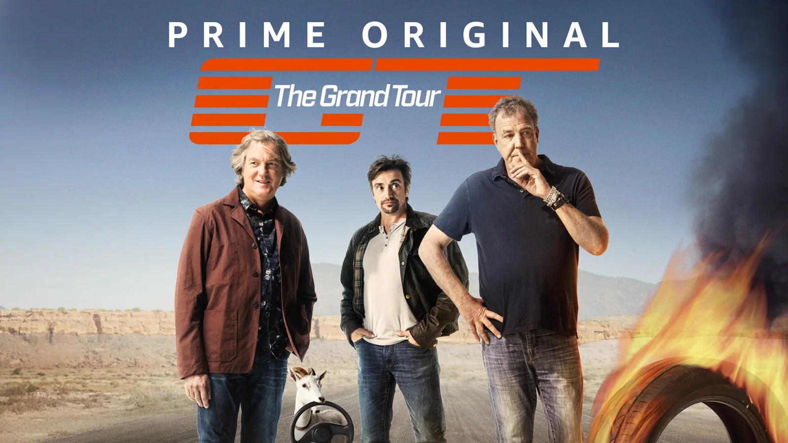
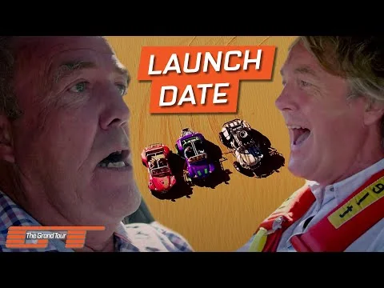
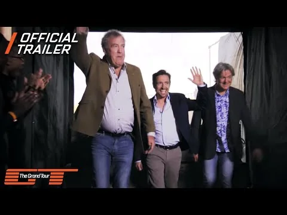
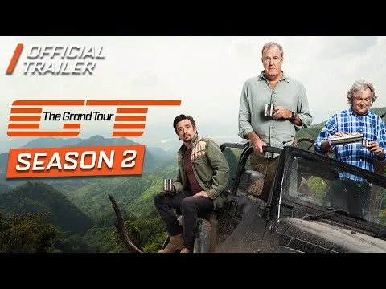
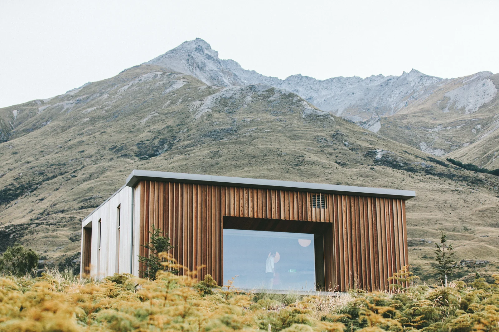
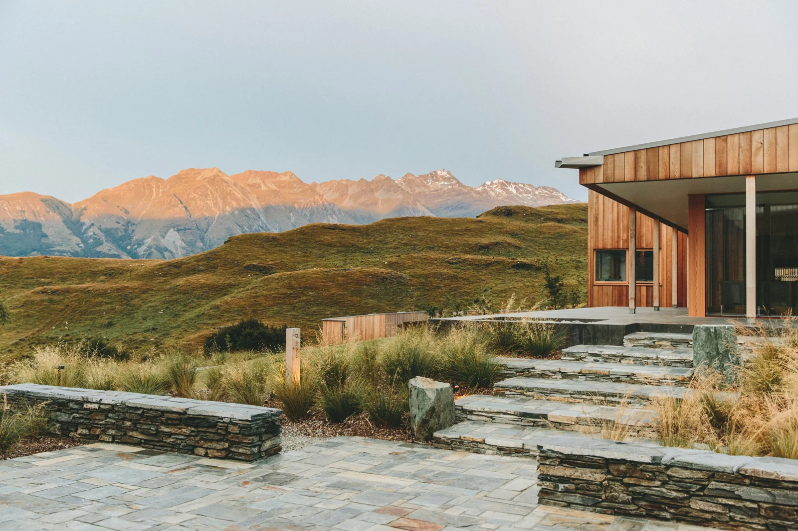

The Grand Tour
A global audience. A new destination.
Prime Video
Global launch
Platform growth / Entertainment

Connecting an established international fanbase with Prime Video through a major entertainment launch.
The challenge
Turn the anticipation for Clarkson, Hammond, and May’s new series into a reason for audiences to discover Prime Video.
The approach
Build a campaign around the trio’s international fanbase, using the show’s appeal to introduce the streaming platform and its subscription offering.
My contribution
I developed a campaign that connected the show’s audience with Prime and Prime Video as its new home.
Launch context
At launch in November 2016, The Grand Tour became Prime Video’s biggest series premiere to date. Amazon also reported its strongest day for new Prime memberships outside Prime Day.
Read the launch announcement ↗The work.

Play film / 01
Play film / 02
Play film / 03


